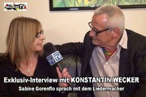

Kontakt & Impressum
WEILBURG-TV – Lahntal-Fernsehen
Dienstanbieter
WEILBURG – TV
Journalistin Sabine Gorenflo DJV
Redaktion
Über dem Hainberg 3
35781 Weilburg
TV-Studio
Lahnschleife
Niedergasse 6
35781 Weilburg
Layout/Gestaltung
Webmaster Ralph Gorenflo
® © 2015–2023


Datenschutzerklärung (DSGVO)
Wir bestätigen, keine personenbezogenen Daten zu sammeln, zu speichern oder Cookies zu verwenden. Wir haben keine Kontaktformulare und nutzen keine Plug-ins, die Dritten Parteien irgendwelche Daten zugänglich machen. Wir nutzen z.B. auch keine Analytics oder Facebook-„Like“-Buttons auf unseren Seiten.
Wir verarbeiten Daten unserer Nutzer grundsätzlich nur, soweit dies zur Bereitstellung einer funktionsfähigen Website sowie unserer Inhalte und Leistungen erforderlich ist. Die weitere Verarbeitung oder Sammlung personenbezogener Daten unserer Nutzer erfolgt nicht.
Wir arbeiten nach Vorgaben des Hessischen Gesetzes über Freiheit und Recht der Presse – Hessisches Pressegesetz (HPresseG) in der Fassung vom 12. Dezember 2003 und standesrechtlichen Vorgaben unseres Verbandes des DJV (Deutscher Journalistenverband).
Haftung für Inhalte
Die Informationen auf dieser Seite sind allgemeiner und informativer Art. Sie dienen der allgemeinen Bildung und Weiterbildung. Für Richtigkeit, Vollständigkeit und Aktualität dieser Inhalte kann jedoch keine Haftung übernommen werden. Die Veröffentlichungen auf diesen Seiten unterliegen dem deutschen Urheberrecht. Beiträge Dritter sind als solche gekennzeichnet. Vervielfältigung, Bearbeitung und jede Art der Verwertung außerhalb der Grenzen des Urheberrechtes bedürfen der Zustimmung des Betreibers. Downloads und Kopien dieser Seiten sind nur für den privaten, nicht kommerziellen Gebrauch gestattet.
Haftung für Links
Einige Links führen ggf. zu Inhalten fremder Anbieter. Für diese Inhalte ist allein der jeweilige Anbieter verantwortlich. Bei Bekanntwerden von Rechtsverletzungen werden diese Links umgehend entfernt.
Hinweise
Teile und Texte sind mit herzlichem Dank der örtlichen Presse entnommen. Bitte Urheberrechte beachten.